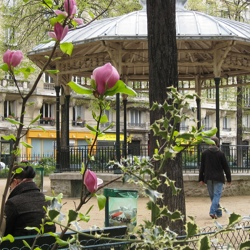

 image: Meg Zimbeck“I opened the hip high gate and found a green wooden bench in the shade”
It was a Paris summer morning like many others, hot when I woke up, the air in my apartment stuffy with sleep. Outdoors, it was cooler but gray. Not a promising start. But there was marketing to be done. A métro ride across town to the Marché d’Aligre and a couple of transactions later, the sun had come out, my canvas bag had been filled with Middle Eastern specialties, fresh fruit, and poulet rôti[1], but my mood had only somewhat improved.
I stopped in at a boulangerie[2] on Square Trousseau for a pain au chocolat[3], my reward to myself for making myself understood in French, counting out the right change. Tucked in off the busy rue du Faubourg Saint Antoine, the park across the street beckoned. I crossed over, opened the hip high gate and found a green wooden bench in the shade.
Sitting there, I tried to put my finger on what was bugging me. Complaining about living in Paris is something akin to high treason.[4] So lucky to be living in Paris, how dare I have even one negative thought about living in the City of Lights? The cafes, the boulevards, the fashion, the wine, the pastries, the art, the light as it filters through the chestnut trees—this is the stuff of legend, of dreams, I told myself, you ungrateful boor.
But for me, the joy and wonder of those first months had been fizzling away. Alone for much of the time over the last few weeks, my new friends scattered to the four winds for the summer, I was learning that Paris is also the city of trash and worse on the sidewalks, the stench of urine in the metro, the homeless men sprawled in the doorways in even the most upscale parts of town. Nary a smile on the street and people standing so close behind you in line that you feel the stickiness of their skin against yours and the stale smell of cigarette smoke on your neck.
From my seat on the bench, though, life looked calm, quiet, and cool. The traffic from the avenue seemed distant. The air felt crisp. The sidewalks around the square were freshly washed. The stores were just beginning to open, the grafitti disappearing as metal grates went up. In the park, a man sat at a table, tapping on his laptop. The mothers at the playground were freeing children from their strollers who then rushed headlong for the sandbox and slides. Empty ping pong tables gleamed silver in the filtered sunlight. I took a deep bite into the buttery pastry, the warm chocolate, and felt a wave of renewal.
referenced works
- Roast chicken ↩
- Bakery ↩
- Chocolate croissant ↩
- High treason is defined as an act of criminality against one’s native country. To complain, then, about living in Paris, is to be somehow disloyal to all the Americans back home who have the unfortunate distinction of not living in France, but must make do anyway, because were they to have such a chance they would, theoretically, never complain. That is, until they smelled the piss in the metro and stepped in dogshit while stopping to take a picture of Notre Dame. See http://en.wikipedia.org/wiki/High_treason ↩
location information
- Name: in the Square Trousseau, 12th arrondissement
- Address: Square Trousseau 75012
- Time of story: Morning
- Latitude: 48.850498
- Longitude: 2.376523
- Map: Google Maps
017 “I opened the hip high gate and found a green wooden bench in the shade”
016 “I didn't know what it was she had that I wanted.”
015 “She was still there, with her shining coat of orange and the green belt of the RER C at her feet.”
014 “Paris is its own reason.”
013 “Gilded angels taking off from Châtelet, Bastille, Invalides”
012 “A dialogue out of nowhere and from the 5th dimension”
011 “I started screaming New York-style obscenities.”
010 “Her soul is okay though, she’s just received Holy Communion at Saint-Nicolas, one station before”
009 “It felt like if things continued the way they were, my body would disintegrate”
008 “It reminded me of an Yves Saint Laurent dress, of mermaids and of Christmas”
007 “I felt a sense of relief as I experienced the rare soothing absence of fluorescent light”
006 “My fist flew wildly and connected with the warm Parisian evening air”
005 “Someone handed me a plastic cup of white wine and I sipped it so I didn’t have to make conversation”
004 “The white winter sunshine makes it warm enough for tourists and locals to sit outside the cafe on the Place des Abbesses”
003 “Two cans of beer in the thin plastic bag”
002 “Je ne suis pas une femme facile”
001 “His guitar was underscoring my morning ride beyond Gare du Nord through the graffitied suburbs”

Write for Us!
We’re looking for short narratives describing pivotal moments of elation, confusion, absurdity, love or grief — or anything in between — inseparably tied to a specific place in Paris.
Paris:
Or receive updates by email
Addresses only used for the occational hitotoki mailing. Otherwise stored on the 4th floor of Tokyo Tower.
A list of all available RSS feeds is on the about page
commentary